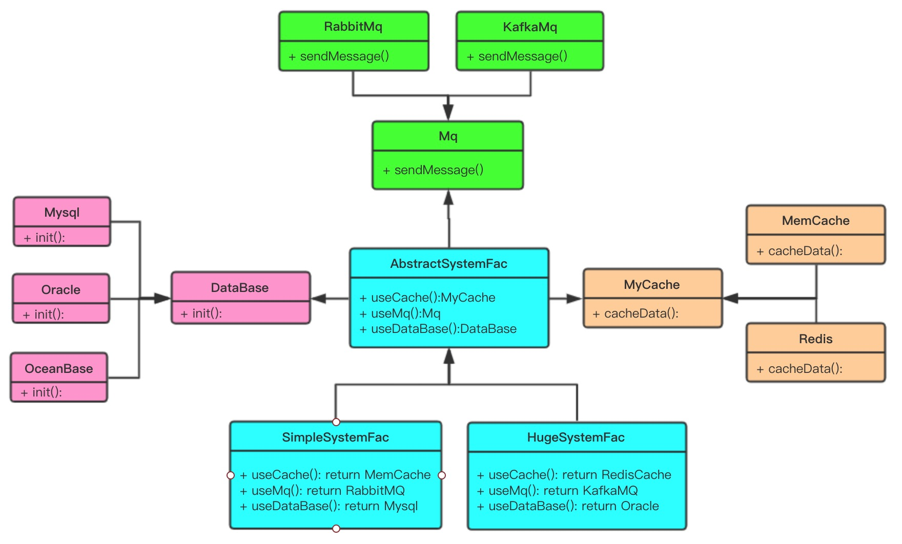
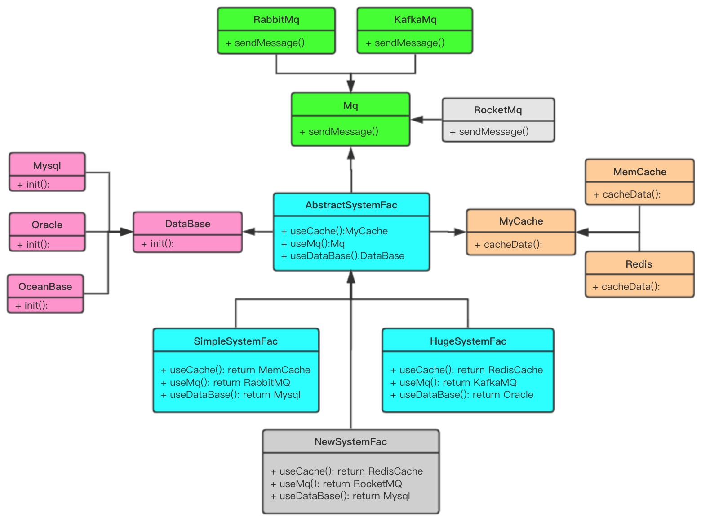

💛原文地址为https://www.cnblogs.com/haixiang/p/12055272.html，转载请注明出处!
工厂方法模式中考虑的是一类产品的生产，如畜牧场只养动物、电视机厂只生产电视机、计算机软件学院只培养计算机软件专业的学生等。
同种类称为同等级，也就是说：工厂方法模式只考虑生产同等级的产品，但是在现实生活中许多工厂是综合型的工厂，能生产多等级（种类） 的产品，如农场里既养动物又种植物，电器厂既生产电视机又生产洗衣机或空调，大学既有软件专业又有生物专业等。
本节要介绍的抽象工厂模式将考虑多等级产品的生产，将同一个具体工厂所生产的位于不同等级的一组产品称为一个产品族，
抽象工厂模式（Abstract Factory Pattern）是围绕一个超级工厂创建其他工厂。该超级工厂又称为其他工厂的工厂。这种类型的设计模式属于创建型模式，它提供了一种创建对象的最佳方式。
在抽象工厂模式中，接口是负责创建一个相关对象的工厂，不需要显式指定它们的类。每个生成的工厂都能按照工厂模式提供对象。
产品易扩展（例如后面案例中扩展新的Mq、数据库、缓存）
产品族扩展非常困难（例如后面案例中新增Server产品族），要增加一个系列的某一产品，既要在抽象工厂里加代码，又要在具体的工厂类里面加代码。
一个完整成熟的系统可以采用不同的技术来解决业务层面的问题，例如数据库可以用Mysql也可以用Oracle。本例中提供了三个产品，分别是消息队列Mq、数据库DataBase以及缓存Mycache三个接口，每个接口下都有自己的具体实现类，也就是工厂的产品。AbstractSystemFac作为抽象工厂类，调用了上述的三个接口，来组装三个不同的产品。SimpleSystemFac与HugeSystemFac是两个具体的工厂类，SimpleSystemFac是一个技术解决方案，选用MySQL数据库、MemCache、RabbitMQ三种产品来实现自己的技术架构。而HugeSystemFac采用Oracle数据库、Redis、Kafka三种产品，这两个工厂类的方法一致，只不过具体调用的产品类型不同。

数据库接口及实现类
/**
* 数据库类型
* @author anqi
*/
public interface DataBase {
/** 初始化数据库 */
void init();
}
public class Mysql implements DataBase {
@Override
public void init() {
System.out.println("MySQL初始化");
}
}
public class Oracle implements DataBase{
@Override
public void init() {
System.out.println("Oracle初始化");
}
}
public class OceanBase implements DataBase{
@Override
public void init() {
System.out.println("OceanBase初始化");
}
}消息队列接口及实现类
/**
* 消息队列类型
* @author anqi
*/
public interface Mq {
/** 发送消息 */
void sendMessage();
}
public class RabbitMQ implements Mq {
@Override
public void sendMessage() {
System.out.println("使用RabbitMQ发送消息");
}
}
public class KafkaMQ implements Mq {
@Override
public void sendMessage() {
System.out.println("使用kafka发送消息");
}
}缓存接口及实现类
/**
* 缓存类型
* @author anqi
*/
public interface MyCache{
/** 缓存数据 */
void cacheData();
}
public class MemCache implements MyCache {
@Override
public void cacheData() {
System.out.println("使用MemCache缓存");
}
}
public class RedisCache implements MyCache {
@Override
public void cacheData() {
System.out.println("使用redis缓存");
}
}抽象工厂类
/**
* 抽象工厂类
*/
public abstract class AbstractSystemFac {
public abstract MyCache useCache();
public abstract Mq useMq();
public abstract DataBase useDataBase();
}具体工厂
public class SimpleSystemFac extends AbstractSystemFac {
@Override
public MyCache useCache() {
return new MemCache();
}
@Override
public Mq useMq() {
return new RabbitMQ();
}
@Override
public DataBase useDataBase() {
return new Mysql();
}
}具体工厂
public class HugeSystemFac extends AbstractSystemFac {
@Override
public MyCache useCache() {
return new RedisCache();
}
@Override
public Mq useMq() {
return new KafkaMQ();
}
@Override
public DataBase useDataBase() {
return new Oracle();
}
}测试类
public class TestDemo {
public static void main(String[] args) {
AbstractSystemFac simpleFac = new SimpleSystemFac();
MyCache memcache = simpleFac.useCache();
DataBase mysql = simpleFac.useDataBase();
Mq rabbitmq = simpleFac.useMq();
memcache.cacheData();;
mysql.init();
rabbitmq.sendMessage();
AbstractSystemFac hugeFac = new HugeSystemFac();
MyCache redis = hugeFac.useCache();
DataBase oracle = hugeFac.useDataBase();
Mq kafka = hugeFac.useMq();
redis.cacheData();
oracle.init();
kafka.sendMessage();
}
}使用MemCache缓存
MySQL初始化
使用RabbitMQ发送消息
使用redis缓存
Oracle初始化
使用kafka发送消息我们可以灵活地扩充一个新的产品RocketMQ，或者一个新的工厂类NewSystemFac，如下图所示
